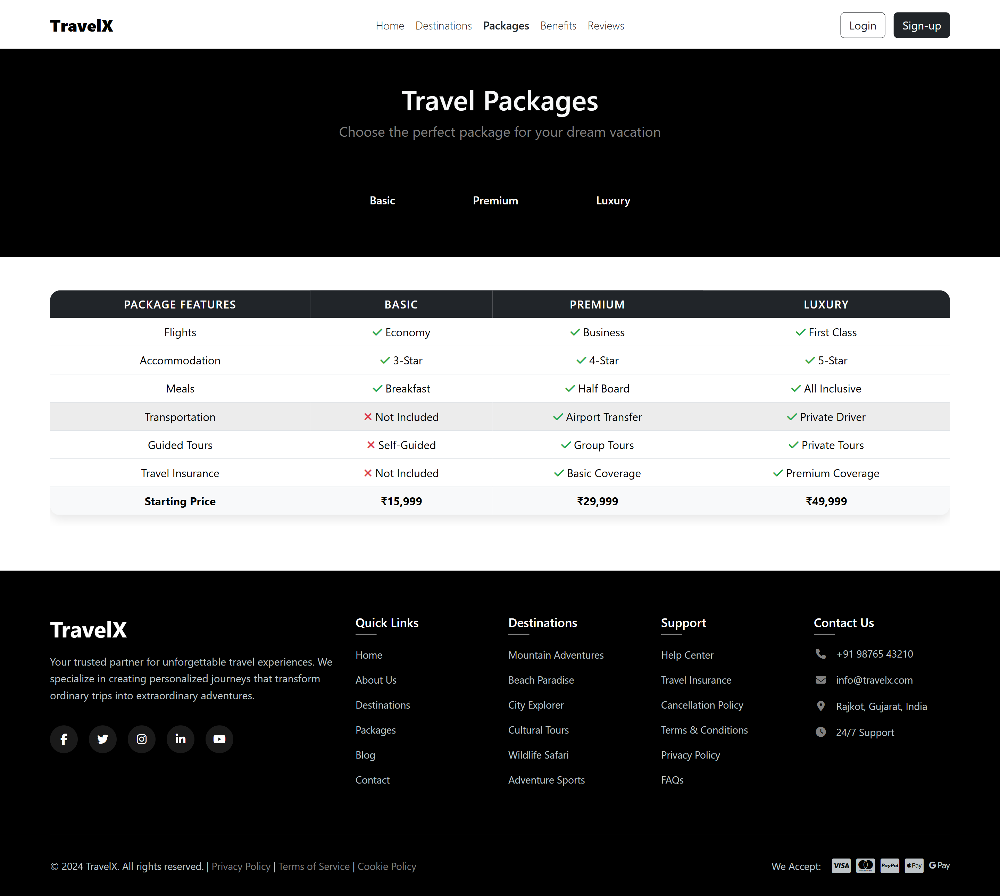
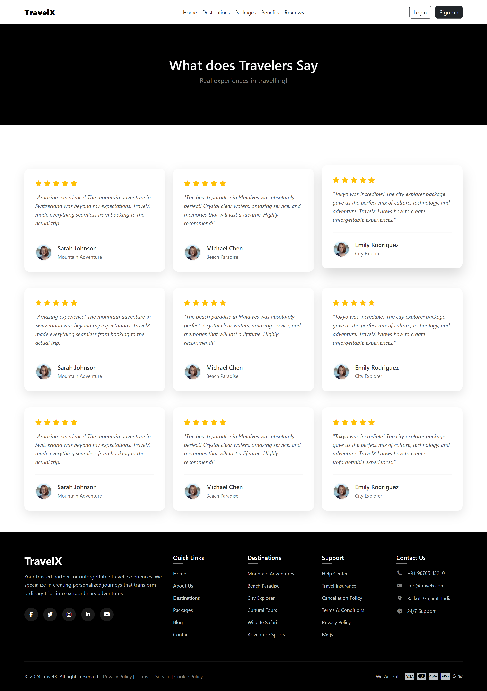
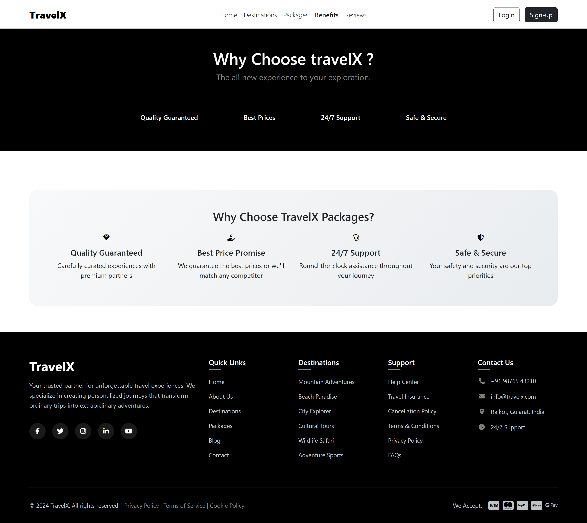

Project Overview
TravelX is a high-performance, multi-page travel agency platform designed to streamline the vacation discovery and booking process. The primary goal of this project was to solve the common user frustration of navigating cluttered travel sites by providing a clean, professional interface that emphasizes high-quality imagery and structured data. The platform is built for modern travelers who seek a curated, premium experience when planning adventures to global destinations like the Swiss Alps, Maldives, or Tokyo.
Key Features
- Adaptive Multi-Page Navigation: Developed a responsive system for Home, Destinations, Packages, Benefits, and Reviews pages, featuring a mobile-optimized toggle menu for seamless navigation across all device types.
- Tiered Service Comparison: Engineered a structured "Travel Packages" interface that allows users to perform a side-by-side comparison of Basic, Premium, and Luxury tiers based on flights, accommodation, and coverage.
- Lead Generation & Social Proof: Integrated a validated newsletter subscription system and a dynamic testimonial section to build brand credibility through verified traveler feedback and star ratings.
Interface Screenshots
A closer look at the specific pages and components built for this application:





Technical Details
- Frontend Stack: HTML5, CSS3, and Bootstrap 5.3.6 for responsive grid management.
- Iconography: FontAwesome 6.7.2 for professional-grade vector highlights.
- Deployment: Managed via GitHub for version control and hosted live through GitHub Pages.